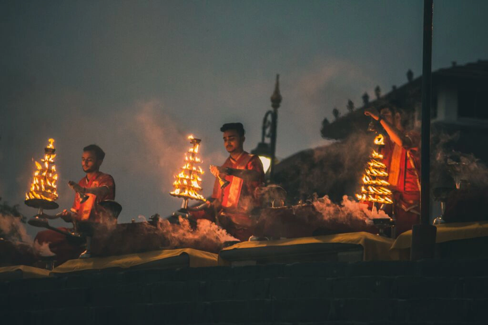
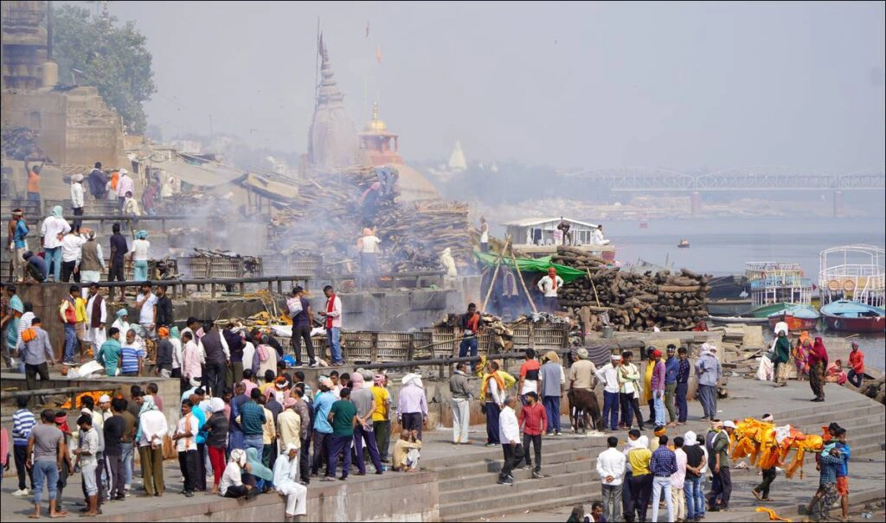
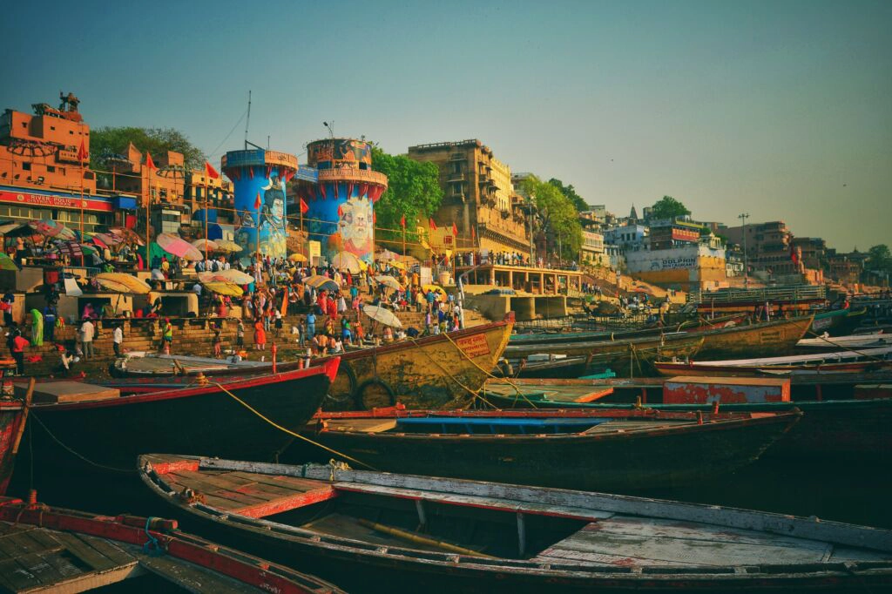

Découverte de Varanasi : La Cité Éternelle de l'Inde
Histoire
Varanasi, également connue sous le nom de Bénarès, est l'une des villes les plus anciennes et les plus sacrées du monde. Située sur les rives du Gange, dans l'État de l'Uttar Pradesh, Varanasi est considérée comme la ville la plus sainte de l'hindouisme. Selon la légende, la ville a été fondée par le dieu Shiva il y a plus de 5 000 ans. Varanasi est non seulement un centre spirituel, mais aussi un centre culturel et éducatif depuis des millénaires. La ville a été un lieu de pèlerinage pour les hindous, les bouddhistes et les jaïns et a attiré des érudits, des poètes et des philosophes. Elle est également associée à de nombreux saints et sages, y compris Gautama Bouddha, qui aurait donné son premier sermon à Sarnath, près de Varanasi.
Économie
L'économie de Varanasi repose principalement sur le tourisme, l'artisanat et l'agriculture. Le tourisme est un pilier économique majeur, attirant des millions de pèlerins et de touristes chaque année. La ville est célèbre pour ses soieries, en particulier les célèbres saris de Bénarès, qui sont tissés à la main et ornés de broderies complexes. L'artisanat local, y compris les sculptures en bois, les bijoux et les tapis, joue également un rôle crucial. L'agriculture est une autre composante importante de l'économie, avec une production notable de céréales, de légumes et de fruits. Les industries modernes, telles que les petites industries manufacturières et les services, se sont également développées pour répondre à la demande croissante.
Architecture

Varanasi est un trésor d'architecture ancienne, avec ses temples, ses ghats (marches menant au Gange) et ses bâtiments historiques. La ville est célèbre pour ses innombrables temples, dont le plus célèbre est le Kashi Vishwanath Temple, dédié à Shiva, l'un des temples les plus sacrés de l'hindouisme. Le temple de Durga, également connu sous le nom de temple du Singe, est un autre exemple notable, connu pour son architecture unique et ses centaines de singes résidents.
Les ghats de Varanasi, qui s'étendent le long du Gange, sont des lieux emblématiques où se déroulent des rituels religieux, des crémations et des cérémonies de l'aarti (offrande de lumière). Le Dashashwamedh Ghat, le Manikarnika Ghat et le Assi Ghat sont parmi les plus célèbres. Varanasi est également parsemée de havelis (maisons traditionnelles) et de palais qui témoignent de l'opulence passée de la ville.
Tourisme
Varanasi est une destination touristique de premier plan, offrant une expérience spirituelle et culturelle unique. Les visiteurs affluent pour assister aux rituels religieux sur les ghats, y compris les cérémonies de l'aarti au Dashashwamedh Ghat, qui attirent des foules de pèlerins et de touristes chaque soir. Les temples, en particulier le Kashi Vishwanath Temple, sont des lieux de pèlerinage importants.
Le Sarnath, situé à quelques kilomètres de Varanasi, est un site bouddhiste majeur où Bouddha a donné son premier sermon. Les visiteurs peuvent explorer les stupas, les monastères et le musée archéologique de Sarnath, qui abrite des reliques bouddhistes précieuses.
Les marchés de Varanasi, tels que le marché de Vishwanath Gali et le marché de Thateri Bazaar, sont des endroits idéaux pour acheter des soieries, des bijoux, des sculptures en bois et d'autres souvenirs artisanaux. La cuisine locale, avec des plats comme le kachori sabzi et les sucreries comme le rabri et le jalebi, est un régal pour les gourmets.
Varanasi en Quelques Chiffres
- Population : Environ 1,2 million d'habitants
- Superficie : 82 km²
- Altitude : 80 mètres au-dessus du niveau de la mer
- Fondation : Plus de 5 000 ans (selon la légende)
- Climat : Tropical avec des étés chauds et des hivers frais
- Langue officielle : Hindi
Les 10 Incontournables de Varanasi
- 1. Kashi Vishwanath Temple
Un des temples les plus sacrés de l'hindouisme, dédié à Shiva. - 2. Dashashwamedh Ghat
Le ghat le plus animé de Varanasi, célèbre pour ses cérémonies. - 3. Manikarnika Ghat
L'un des principaux ghats de crémation, considéré comme sacré par les hindous. - 4. Sarnath
Site bouddhiste où Bouddha a donné son premier sermon. - 5. Assi Ghat
Un ghat populaire pour les bains rituels et les cérémonies de l'aarti. - <6. style="font-weight: bolder;">6. Temple de Durga (Temple du Singe)
Un temple hindou dédié à la déesse Durga, avec une architecture semblable au Temple d'Or. - 7. Banaras Hindu University (BHU)
Une des plus grandes universités résidentielles d'Asie, avec un magnifique campus. - 8. Ramnagar Fort
Fort historique situé sur les rives du Gange, résidence de l'ancien maharaja de Bénarès. - 9. Vishwanath Gali
Un marché animé près du Kashi Vishwanath Temple, célèbre pour ses soieries et ses bijoux. - 10. Temple de Tulsi Manas
Temple dédié à l'auteur du Ramcharitmanas, Tulsi Das, avec des sculptures en marbre illustrant des scènes du Ramayana.
Vous souhaitez plus d'informations
N'hesitez à nous contacter pour plus de renseignements sur nos services, nous sommes à votre ecoute pour faire de ce voyage un moment inoubliable